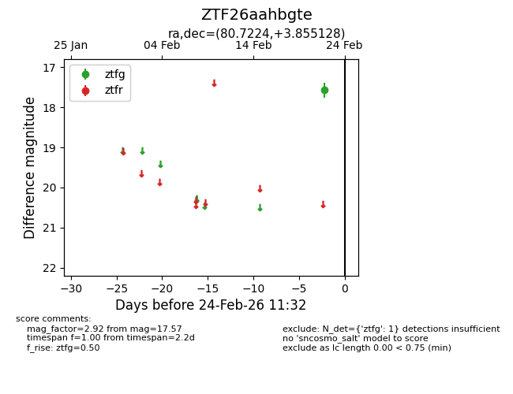
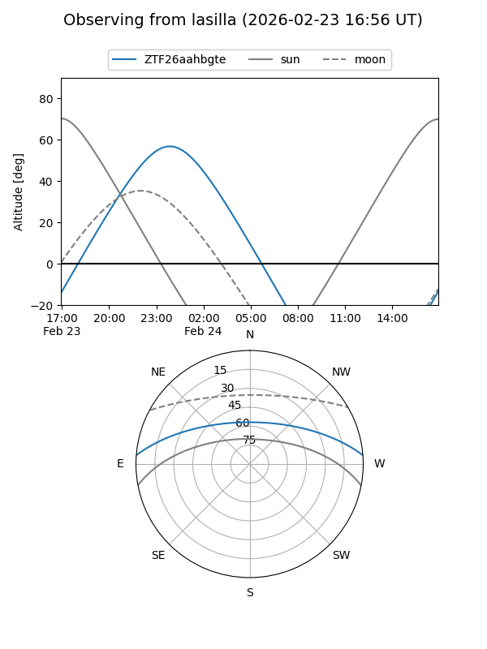
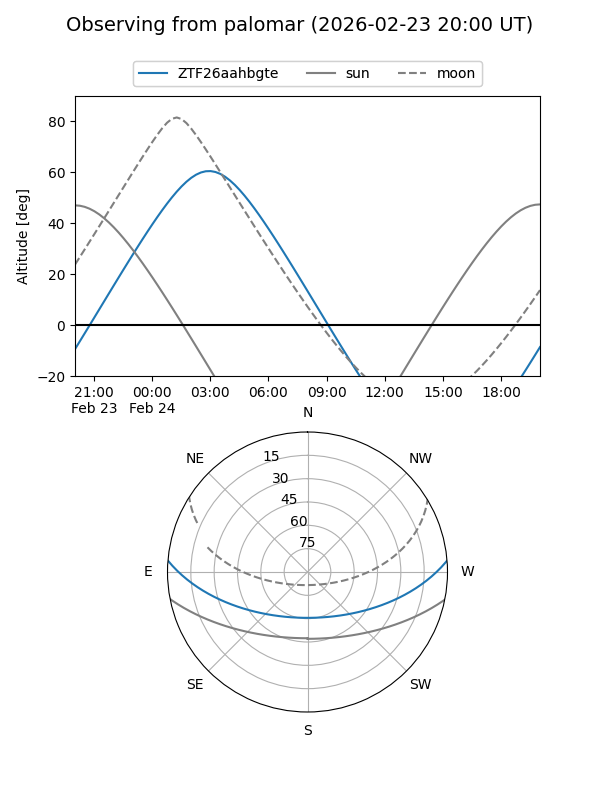

ZTF26aahbgte
Target ZTF26aahbgte at 2026-02-24 11:33
Aliases and brokers:
FINK: link
Lasair: link
ALeRCE: link
alt names
ZTF26aahbgte (ztf,fink_ztf)
Coordinates:
equatorial (ra, dec) = 80.7224,+3.85513
equatorial (HMS+DMS) = 05:22:53.38,+03:51:18.46
galactic (l, b) = (198.8825,-17.69512)
Flags:
Photometry:
last ztfg=17.57
1 ztfg detections
Lightcurve

Visibility


Additional plots